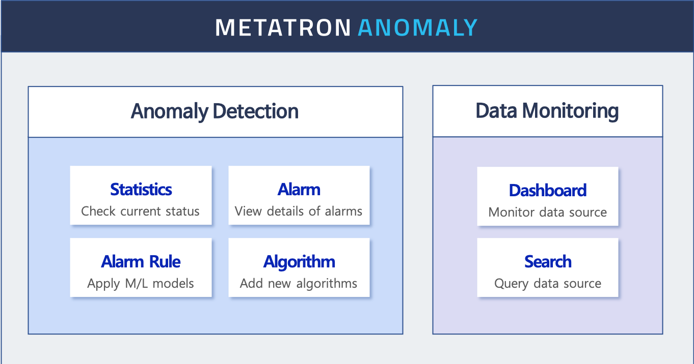

Introduction of Anomaly Expansion Pack¶
The Anomaly Expansion Pack is a tool that detects abnormal data flow and immediately alerts users. For this detection, it uses prediction models built based on machine learning.
Basic principles¶
As shown below, Anomaly predicts an aggregate of the target data source in real time and monitors the actual value.

Here, the value marked as Predict is the data aggregate predicted through machine learning, and the value marked as Actual is the actual monitored value. As shown below, the total abnormal score increases with the difference between the two values. That is, the data aggregate is considered as deviating from the normal range if the actual value is significantly different from the predicted value.

In this example, a Moderate alarm is triggered when the abnormal score reaches 10, and a Critical alarm when the score reaches 80.
The alarms are reported through various channels to the user, so that immediate action can be taken in response to anomalies.
Key functions¶
The key functions of Anomaly are as follows:
Machine learning
User convenience enhanced with automatic recommendation of a prediction model based on machine learning
Alarms & reports
Immediate alarm triggering and report generation in case of anomaly
Analyze
Chart generation and analysis service linkable with Metatron Discovery
Linkage with learning system
New forms of analysis possible through linkage with external analytics systems
Structure¶
The menus in Anomaly are organized as follows:

Users can easily navigate across menus, use references to detailed items, and gain organic understanding of alarms including their rule settings, past occurrences, and overall statistics.